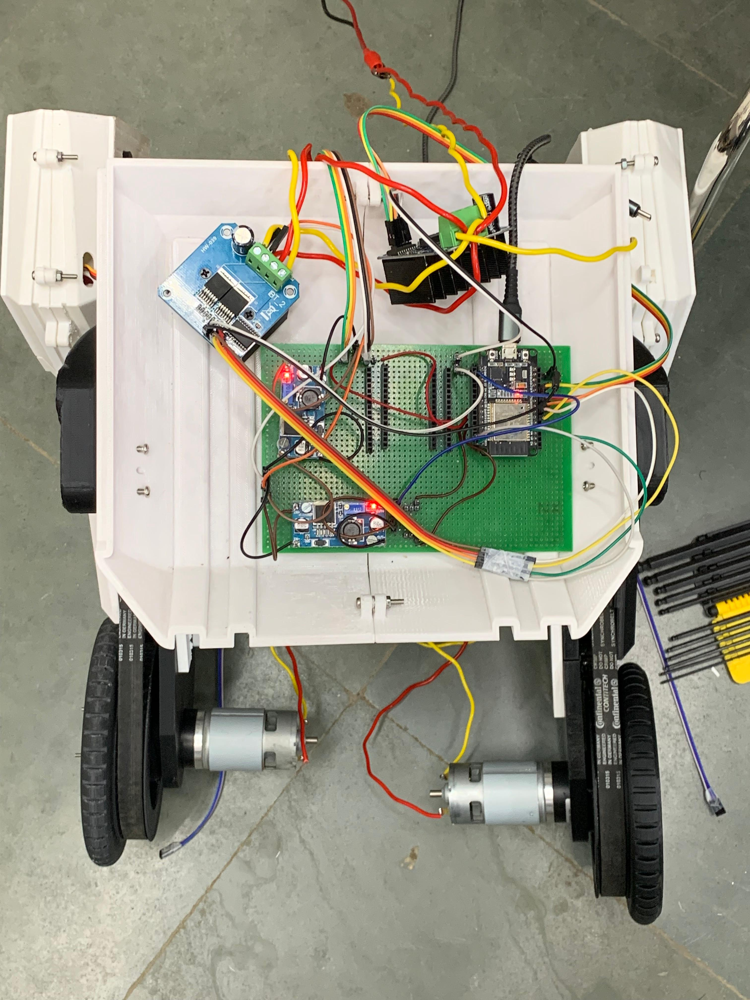
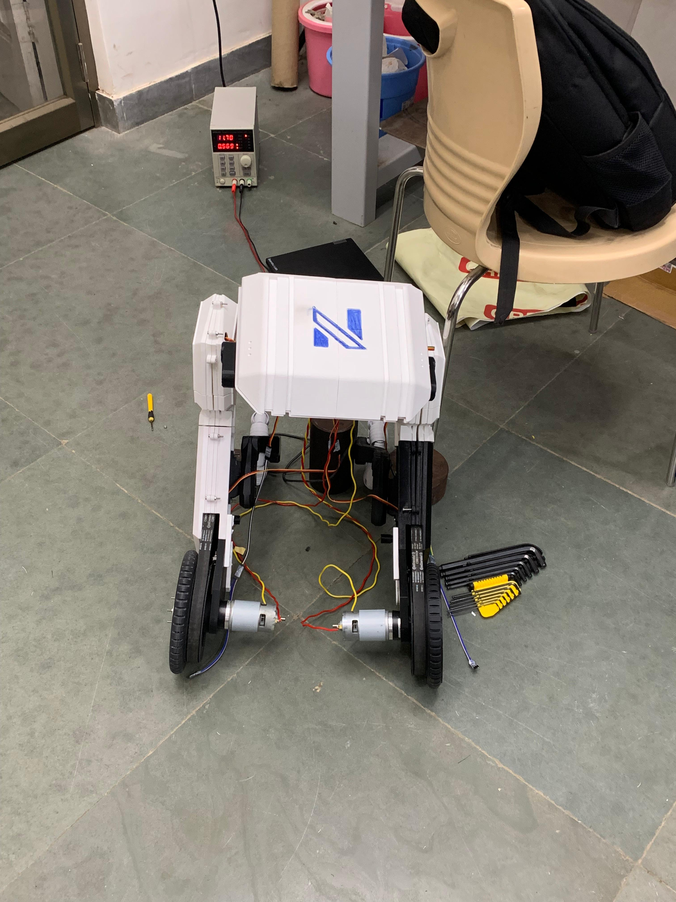
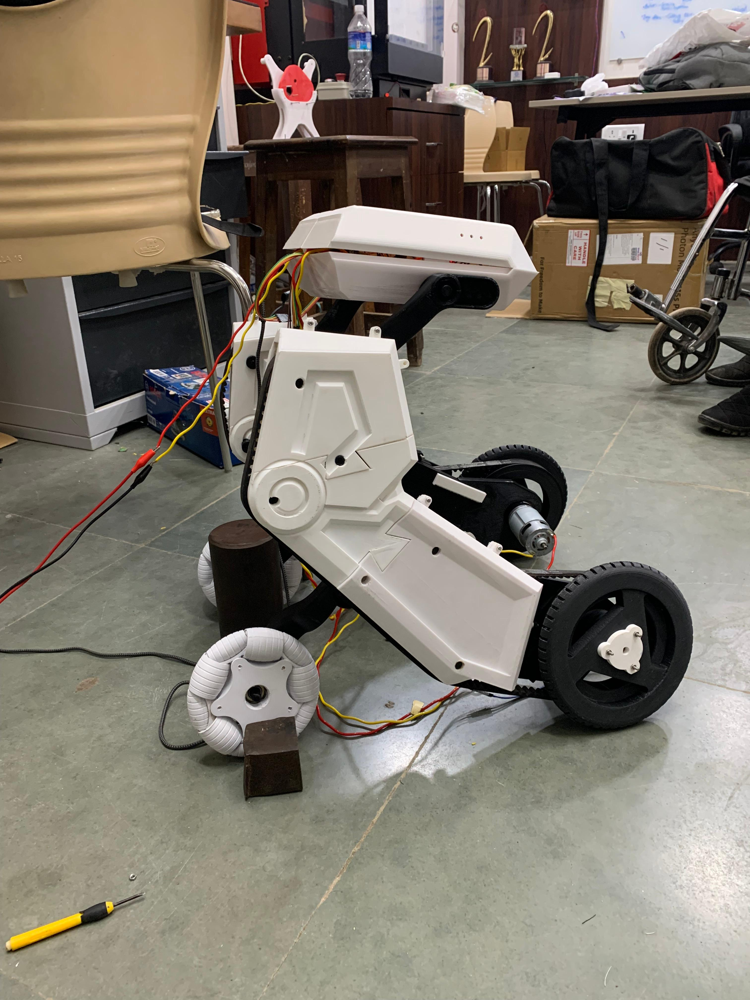

Nishcorp Technologies is a robotics startup focused on developing innovative mobility solutions. During my internship, I contributed to their flagship project: an autonomous wheelchair capable of climbing stairs. This project was pivotal in helping the startup secure grants totaling ₹13 lakh for further development.
My main responsibility was to take a provided CAD model of the stair-climbing wheelchair and bring it to life in simulation. The goal was to validate the design, test its kinematics, and demonstrate its capabilities in both virtual and physical environments.

PCB for the Wheelchair.

Assembled Bot.

Assembled half-scale model of the stair-climbing wheelchair.
Simulation of the wheelchair in Gazebo.
The successful simulation and assembly of the half-scale wheelchair model played a key role in demonstrating the feasibility of the design. With this working prototype, Nishcorp Technologies was able to secure ₹13 lakh in grants to continue developing their full-scale autonomous stair-climbing wheelchair.